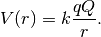
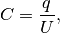
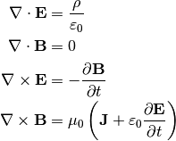

Electrodynamics¶
Note for electrodynamics course.
Coulomb Potential Energy for a point charge Q with the appearance of a test charge q at distance r

The ability to keep storage of charge is called capacitance, which is straight forward to have such a definition as

where  is the electric potential (not the potential energy).
is the electric potential (not the potential energy).
Maxwell’s equations are
![\mathbf{E}\cdot\mathrm{d}\mathbf{S} &= \frac{1}{\varepsilon_0} \iiint_\Omega \rho \,\mathrm{d}V \\
\mathbf{B}\cdot\mathrm{d}\mathbf{S} &= 0 \\
\oint_{\partial \Sigma} \mathbf{E} \cdot \mathrm{d}\boldsymbol{\ell} & = - \frac{d}{dt} \iint_{\Sigma} \mathbf{B} \cdot \mathrm{d}\mathbf{S} \\
\oint_{\partial \Sigma} \mathbf{B} \cdot \mathrm{d}\boldsymbol{\ell} &= \mu_0 \iint_{\Sigma} \mathbf{J} \cdot \mathrm{d}\mathbf{S} + \mu_0 \varepsilon_0 \frac{d}{dt} \iint_{\Sigma} \mathbf{E} \cdot \mathrm{d}\mathbf{S}](../_images/math/c6cef65075c59921eddeca225f2106e8058fc594.png)
or

Books & Acknowledgement¶
Introduction¶
I am not expecting myself to typeset all the essential notes here but the key ideas that drive me somewhere.
ToC¶

This open source project is hosted on GitHub: electrodynamics .
Read online: Electrodynamics Notes .
Download the Latest PDF Version .
Many thanks to open source project Sphinx for it saves me a lot of time.
RST cheat sheet from ralsina .
{kind=link}
{kind=link}